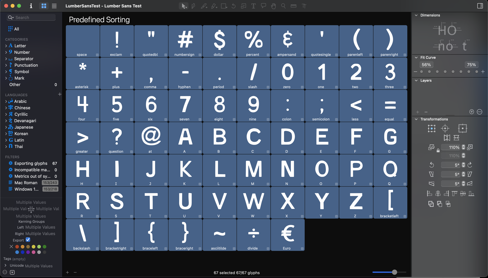

- Context
Typography
- Roles
Font Designer
Design History Researcher
- Date
Jun. '21 - Aug. '21
I've always loved typography, and stumbled into a slight obsession with avant-garde font websites over quarantine. I thought, why not try my own hand at making a font? I opened up Illustrator (actual type programs are so expensive!) and painfully made my own font, called Lumber Sans. It's actually what I've used on this site for all of my headings (blue, all caps)! If you would like to download Lumber Sans to use it yourself, please donwload it here.
Lumber Sans was inspired by the long history of wood-block fonts and lumber found in the Pacific Northwest (where I grew up). You will find small grooves and 'handmade' peculiarities with each character, inspired by the wood grain and the grooves in hand-carved timber. I was also inspired by the National Park signage pictured in Standards Manual's Parks book. Lumber Sans is an all-caps typeface, made to be used as a heading or title font.
Glyphs 3 Screengrab:
